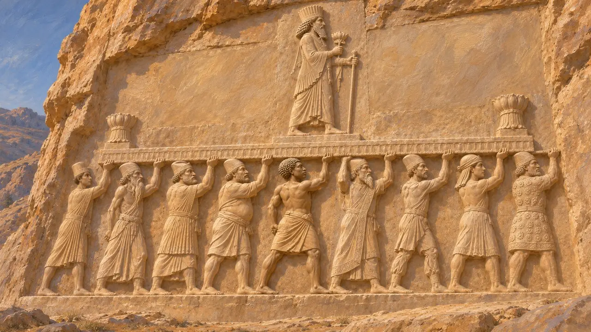
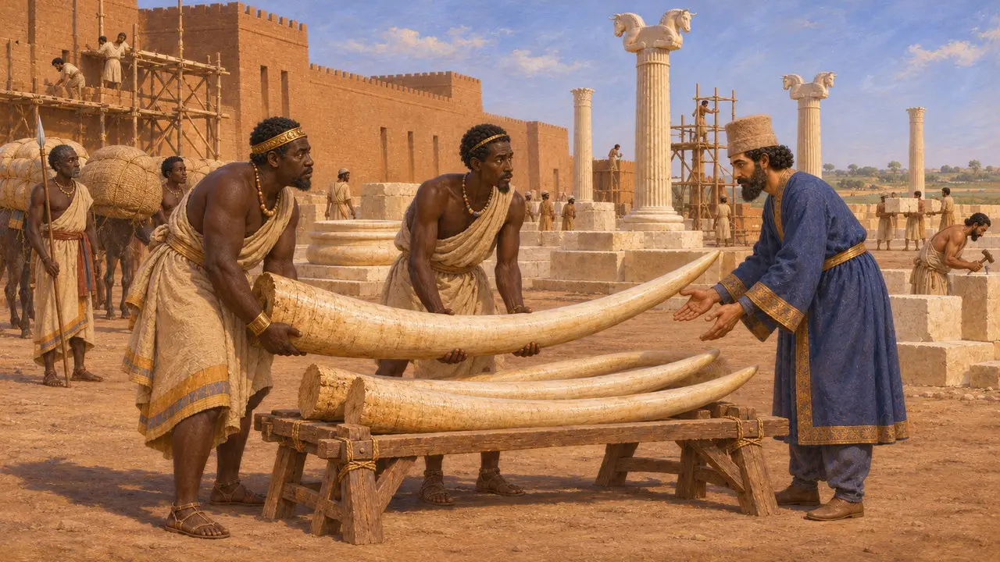
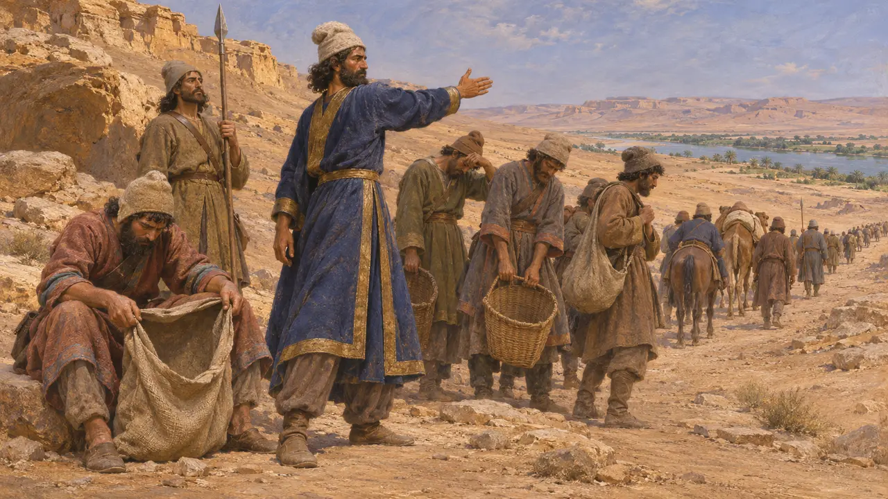
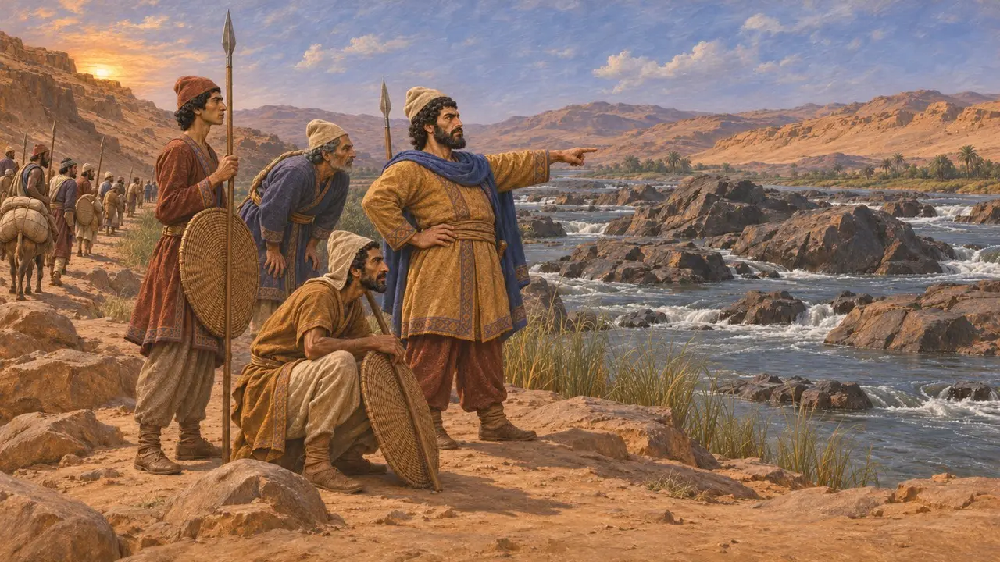
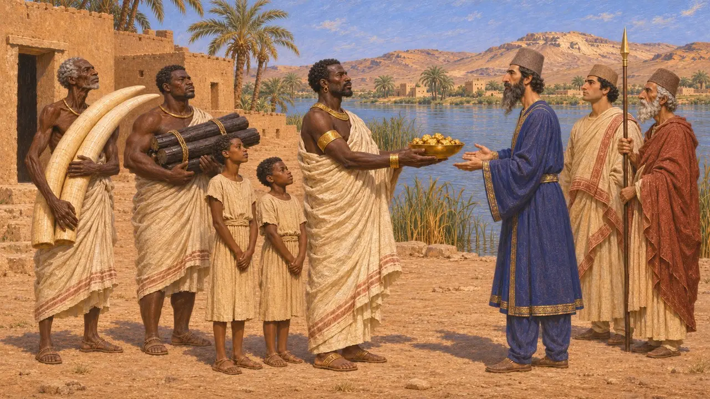

Koush (Éthiopie)
Le royaume du Nil au sud de l'Égypte, connu des Perses sous le nom de Kushiya, vers 525-480 av. J.-C.
Koush était le royaume du Nil situé au sud de l'Égypte, dont le cœur se trouvait dans l'actuel nord du Soudan. Les inscriptions perses le nomment Kushiya, et les écrivains grecs appelaient ce pays l'Éthiopie. Il ne fut jamais au centre de la politique perse, mais Hérodote affirme que Cambyse marcha contre lui, et les inscriptions de Darius rangent Kushiya parmi les pays qui lui appartenaient.
Dans le jeu : Le jeu ne mentionne Koush que dans les entrées de la Chronique et dans les articles d'événements, à propos de la marche de Cambyse vers le sud et de la charte de Suse, où il désigne le royaume du Nil situé au-delà de l'Égypte et une source d'ivoire. Il n'a pas de mécanique qui lui soit propre.

Koush dans les inscriptions perses
Dans les sourcesL'inscription de Darius sur son tombeau à Naqsh-e Rostam compte Kushiya parmi les terres qu'il tenait. Les reliefs du tombeau montrent aussi des peuples portant l'estrade royale, parmi lesquels un Koushite. Ces textes montrent que, dès le règne de Darius, les Perses considéraient Koush comme faisant partie de l'empire, ou du moins comme lui étant lié.
DNa


La marche de Cambyse contre les Éthiopiens
Récit antiqueHérodote raconte qu'après avoir pris l'Égypte, Cambyse envoya auprès du roi éthiopien des espions, qu'il appelle Ichtyophages. Le roi répondit par un arc et un défi. Selon Hérodote, Cambyse partit sans provisions, dans un accès de rage, et l'armée manqua de vivres avant d'avoir parcouru le cinquième du chemin, si bien qu'il rebroussa chemin. Le portrait d'un roi téméraire est celui d'Hérodote lui-même.
Herodotus 3.17-25

Ce que la marche a permis d'accomplir
ContestéLes historiens modernes doutent que Cambyse ait atteint le cœur du pays de Koush. Certains pensent qu'il n'avança qu'en Basse-Nubie, peut-être jusqu'à la deuxième cataracte, et que le récit d'échec d'Hérodote exagère peut-être les pertes. L'affirmation selon laquelle Cambyse aurait fondé une ville nommée Méroé vient d'auteurs bien plus tardifs et n'est appuyée par aucune source de l'époque.
P. Briant, From Cyrus to Alexander, 2002

Présents du sud
Récit antiqueHérodote dit que les Éthiopiens voisins de l'Égypte, dont Cambyse s'était approché, ne payaient aucun tribut mais apportaient des présents tous les trois ans. Il cite l'or, l'ébène, des défenses d'ivoire et des garçons, et affirme que cet usage se perpétuait jusqu'à son époque. Hérodote place ce passage dans sa liste des districts de Darius, et il suggère un lien plus lâche que celui d'une province.
Herodotus 3.97
Sources
- DSf
- DNa
- Herodotus 3.17-25
- Herodotus 3.97
- P. Briant, From Cyrus to Alexander, 2002